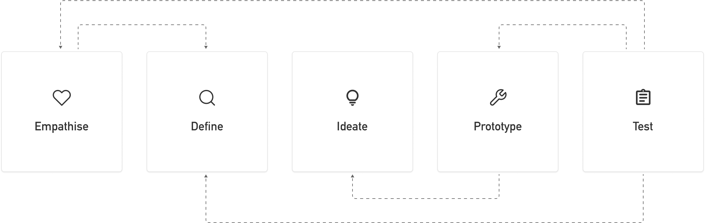

FLEX
CASE STUDY

10 Weeks September-November 2023
Intro
Flex is a recruitment app, connecting students and employers. Starting off we thought we were only creating an app for students in need of part-time work, but through research we quickly realised we are also creating another option for students stuck in part-time jobs that don't fit their changing schedule
Role: Product Designer, Project Manager and Researcher
Tools: Figma, Mockup, Miro, Figjam and Zoom
Design Thinking Process
Problem
Students struggle with finding part-time work that fits their changing schedule, this means most students deal with a lot of unnecessary stress due to a loss of control and balance either if they have a job or not.
Goal
Our goal is to create an app that seeks to relieve students of the stress they experience from either trying to find part-time work, or the stress they get from having a job that does not fit their changing schedule.
Empathise
In this stage we sat aside our assumptions and seeked to understand our users, some of the methods we did to do so were literature reviews and interviews. To get a better grasp of all the data gathered in the end, we created an affinity map with insightful themes to interpret the data.
Through empathising we learnt that even if students have part-time work, they are not necessarily less stressed about the topic. This is due to the work most of the time not fitting their changing schedule, meaning they have work when they should be in class or no work when they are free.
Define
Defining the problem is no easy task, but through empathising with our users in the last stage, the problem was starting to take shape. Some of the methods used to define the problem were creating a persona and scenario, this in turn helped us write a problem statement defining the core problems students experienced with part-time work.
Problem Statement
Students looking for work that fits their changing schedule need an easier way to connect with employers on days they are free so they don't need to set studies aside to work on days they are not. This is because most students tend to have part time jobs that do not fit student life because shifts can be at the same time as classes, have no shifts when they are free or feel pressured to work because their boss keeps asking them.
If we can solve this problem we could positively impact students because we would give them back the control and balance they need to be good students and earn enough without it being a stressful experience. This would benefit our business because if we have a lot of students with changing schedules signed up, some of them would be free to work for shifts that are usually hard to fill.
Ideate
Now that we had a defined problem, it was time to start figuring out a solution. Two of the methods used to generate ideas were mind mapping and brainstorming, then we ran the ideas through a N.U.F. test to figure out what to move on from and what to move on with.
In the end it was clear we were looking at some sort of a recruitment app, with requirements for the student to have more choice of when and where they would work, restoring their loss of control and balance. We then created sketches to visualise the app, an information architecture to organise the content, and user flows to see how paths might work.
Prototype
The first couple prototypes created were low fidelity, this was to see what the layout for the different pages could look like and how the design would cope on smaller phone screens. We then moved on to mid fidelity where we spent a lot of time implementing good design patterns and principles, making sure the design matched our users' mental models.
For high fidelity we did not only create prototypes, we created a design system and made sure colours passed the WCAG contrast checker. The goal here was to both create our styling and include necessary measures for accessibility.
Test
For the final stage of the design thinking process we need to test our solution, for this case study we did two rounds of testing with three participants for each round. The first round we tested our mid fidelity prototypes and made design iterations, then in the second round we tested our high fidelity prototypes.
In both rounds of testing users were extremely satisfied with the solution and all its functions, yet we still discovered usability issues either through feedback verbally or by watching the participant. These issues were mostly minor like cleaning up the header section of the jobs page or fine tuning the calendar component, all in all testing went incredibly well.
Solution
This is the current state of Flex as of today, there are still improvements to be made and some of these are fine tuning the calendar component, previous job cards, and incorporating more transparency in the process of applying for a job.
Results
Participants really liked Flex as a solution to the problem they were dealing with as students looking for work that fits their changing schedule. They were happy with the control they were given through filters and the balance they could restore by having more say of when they would work.
Spending a solid chunk of time understanding our users proved fruitful as when users tested the prototypes, they flew through every task with no errors as their mental models were matched. Satisfaction of the solution scored incredibly high, improving by 10.5 percent from mid to high fidelity prototypes after changes were made from the first round of testing.
Challenges
This project was no easy undertaking, there was a lot of work to be done and doing it all by myself did not make it any easier. I have in return learnt a ton, being a part of every aspect of the process from start to finish.